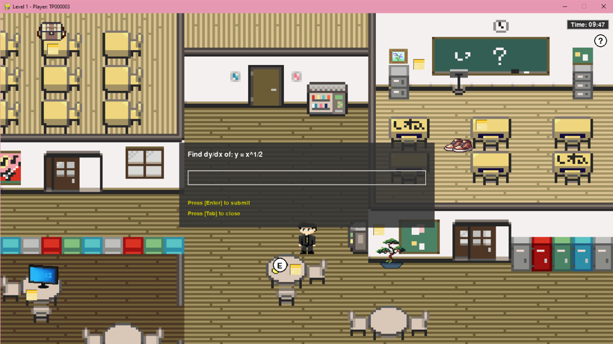
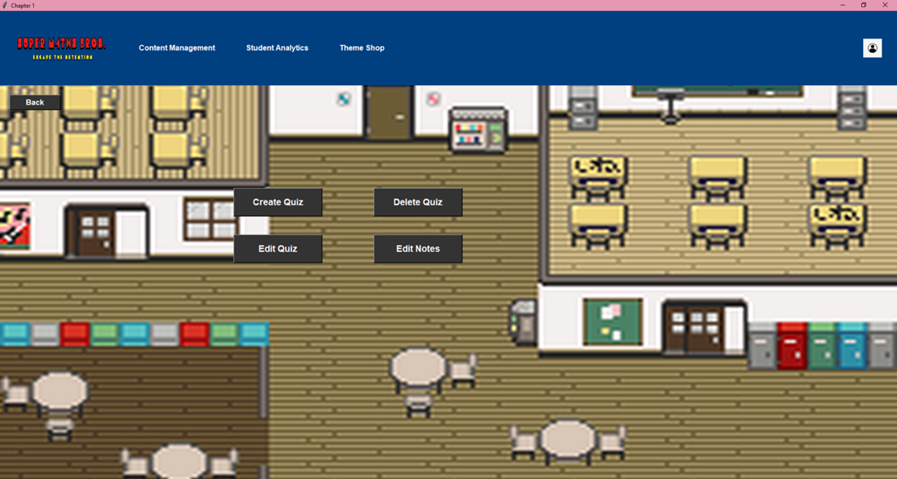
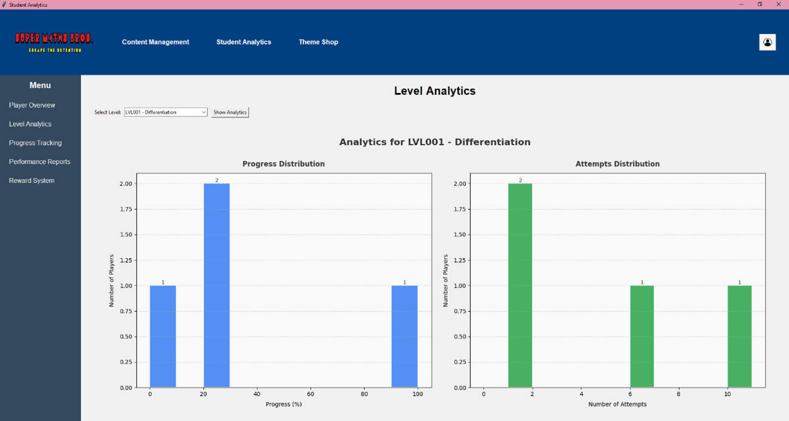

A top-down educational game that turns calculus revision into a timed escape challenge — built in Python with Pygame, and backed by authoring tools and an analytics dashboard for teaching staff.
View Source CodeStudents revising calculus tend to drill past papers in isolation, which makes it hard to stay engaged and harder still for lecturers to see who is actually struggling. Super M4ths Bros reframes that revision as a game: the player is stuck in detention, and the only way out is to work through the mathematics.
The player explores a pixel-art school from a top-down view, approaching non-player characters to trigger a question prompt. Each level is timed and tied to a specific topic — level LVL001 covers differentiation, for example — so progress through the building maps directly onto progress through the syllabus.
What makes the project more than a single game loop is that it ships with the tooling around it. Lecturers get an in-game console for writing the questions, and a separate analytics view reports how the cohort is actually performing, so the content can be maintained without touching the source code.
A tile-based campus — classrooms, corridors, lockers and a cafeteria — navigated in a top-down view with collision handling against the scenery.
Walking up to a character shows an [E] interaction cue. Engaging opens a modal with the question, a free-text answer field, and keyboard controls to submit or dismiss.
Each chapter runs against a countdown displayed on the HUD, adding pressure that rewards fluency rather than slow trial and error.
An in-game console to create, edit and delete quizzes and revise the accompanying notes, so question banks stay editable by teaching staff.
Progress and attempt distributions are rendered as charts per level, alongside player overview, progress tracking and performance reports.
A reward system lets players spend what they earn through correct answers on cosmetic themes, giving a reason to keep returning.



I worked on this Final Year Project as the gameplay developer, owning the layer the player actually interacts with — movement, interaction, and the question loop that drives progression.